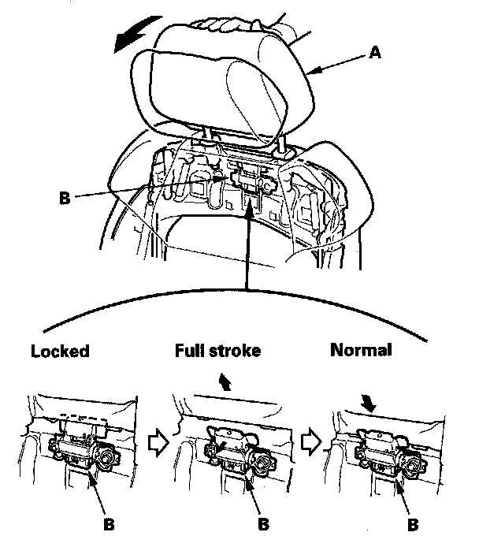
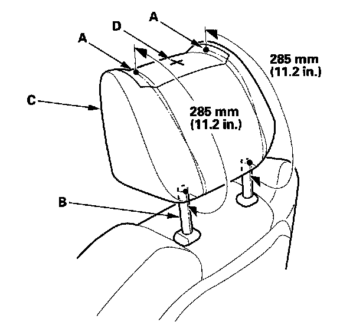
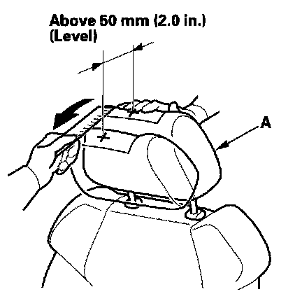

Head Rest: Testing and Inspection
Front Seat Active Head Restraint InspectionNOTE: If the vehicle has been in a collision, always inspect the active head restraint, even if they appear reusable, by doing the following procedure.
Resetting Head Restraint Position

1. Push the head restraint (A) forward fully from the locked position to return the inside inertia lock (B).
2. Slowly raise the head restraint into the normal position.
Inspection
3. Fold the seat-back forward, then recline the seat-back to the first lock position, and adjust the head restraint to the highest position.
4. Apply masking tape on the top of the head restraint.

5. Make marks (A) on both sides at 285 mm (11.2 in.) upward from the roots of the head restraint frame (B) along the back of the head restraint (C) surface. Make a center of these points as a datum point (D).

6. Push the head restraint (A) forward, and check: With a scale, measure the level amount of the head restraint movement. The head restraint should move more than 50 mm (2.0 in.) without resistance. If it is less than 50 mm (2.0 in.), or the head restraint doesn't move smoothly, replace the seat-back frame.